長野の山々を自転車で駆け巡り、温泉でととのう！
残暑の厳しい都会を抜け出して、涼しい高原と温泉を楽しみます。
「白根ハイウェイ」から「奥志賀スーパー林道」の通しルートは”初企画”
山の絶景・天然温泉・冷涼なルートをご堪能下さい。
ハイライトムービーと写真は参加者の方々から頂いたものです。ありがとうございます！
ハイライトムービー
～DAY1🚴～
軽井沢駅から草津温泉へ
9月4日(金)
JR北陸新幹線にて大雨を潜り抜け「軽井沢駅」に到着後、いよいよサイクリングがスタート。
初日は軽井沢から草津温泉を目指す約45kmの行程です。獲得標高は1170メートル。
サイクリングを楽しんだ後は、宿泊先である草津温泉「喜びの宿 高松」に到着。
名湯につかり、明日のロングライドに向けてしっかりと疲れを癒やします。
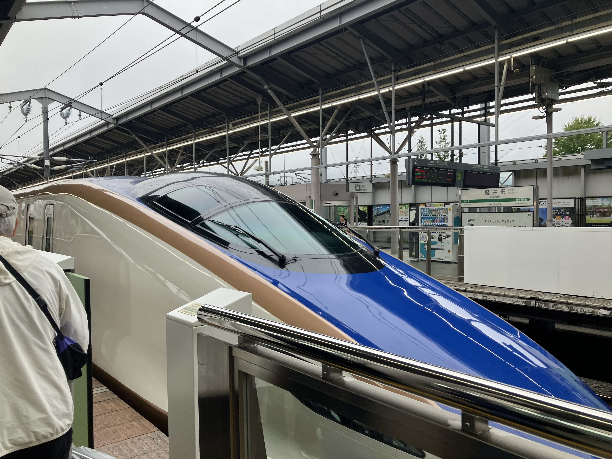
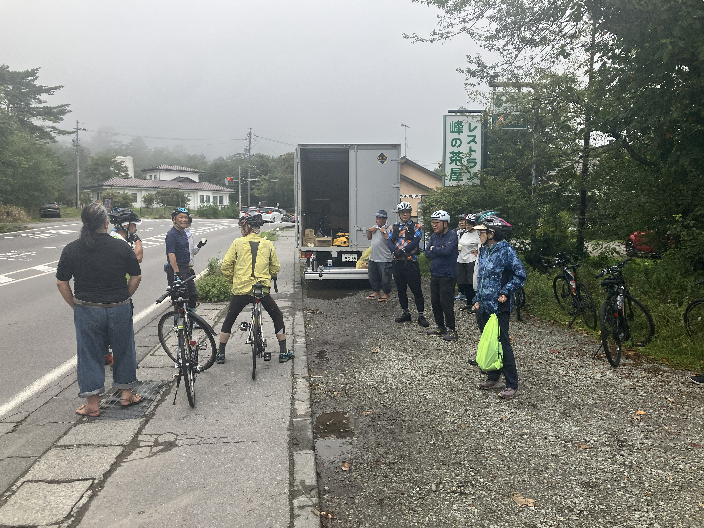
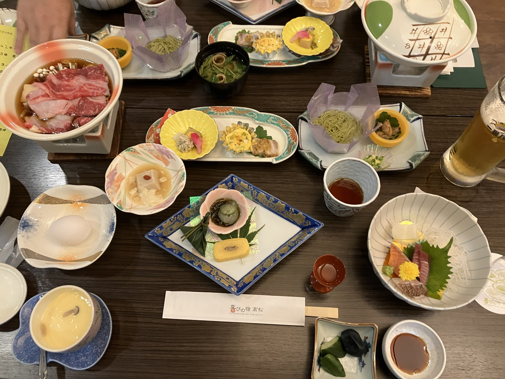
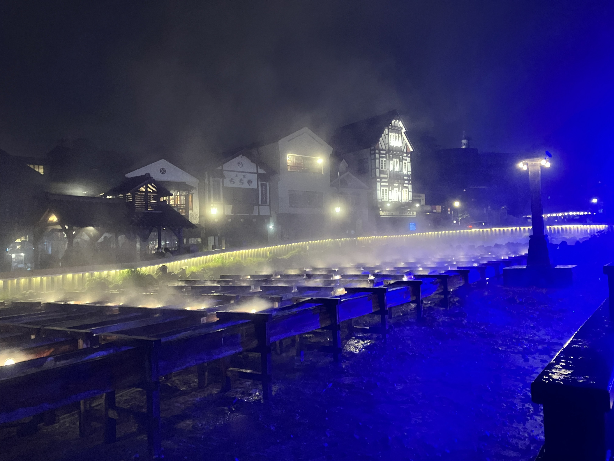
～DAY2🚴～
白根山～奥志賀
9月5日(土)
志賀草津高原ルート（白根ハイウェイ）を駆け上がり、標高2173mの「渋峠」を越えます。
そこから奥志賀スーパー林道を抜けて野沢温泉を目指す、走行距離約80km、獲得標高1100mのルートです。
宿泊は野沢温泉「ペンション魚安」。アツアツの温泉で体をほぐしましょう。
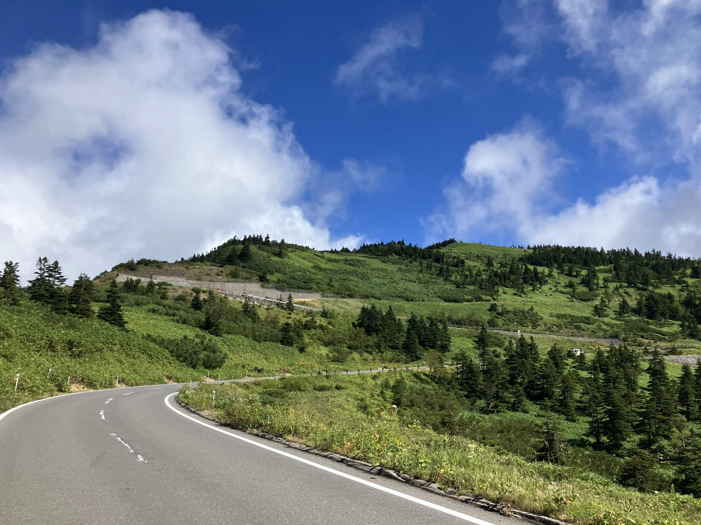
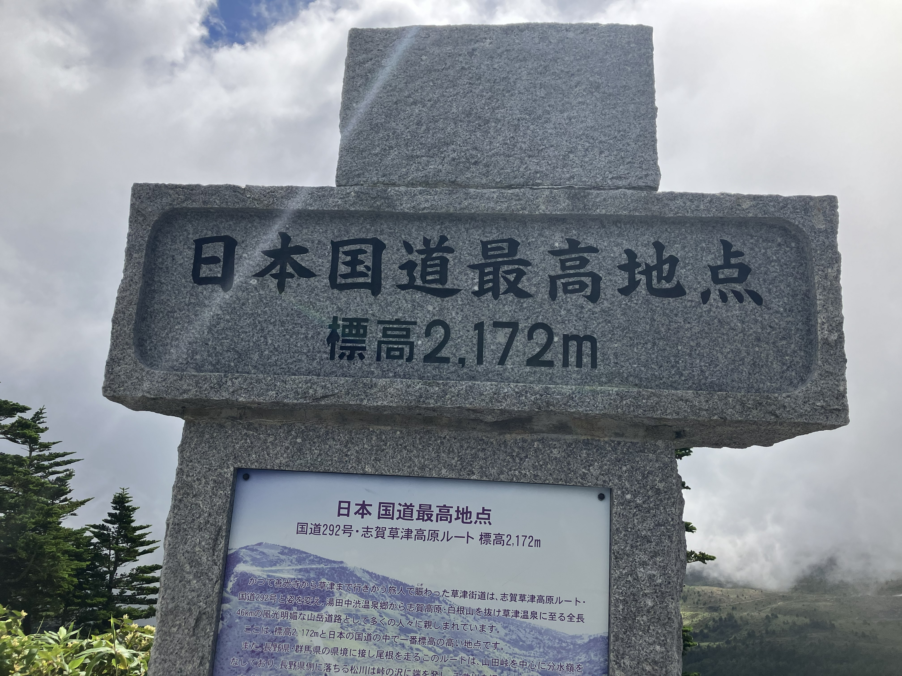
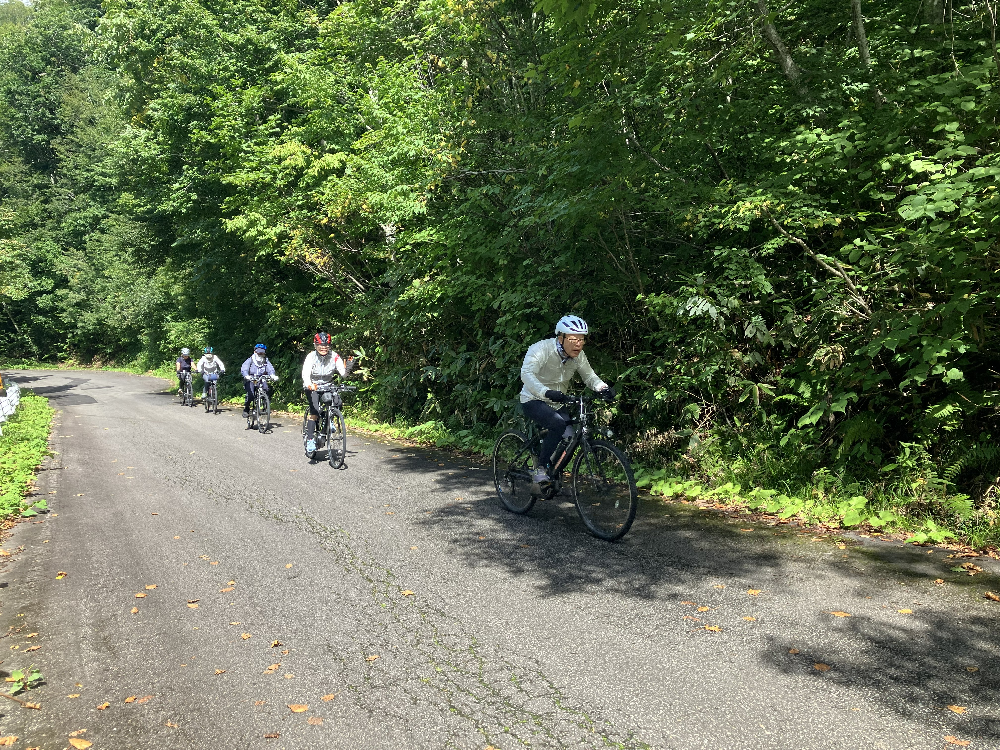
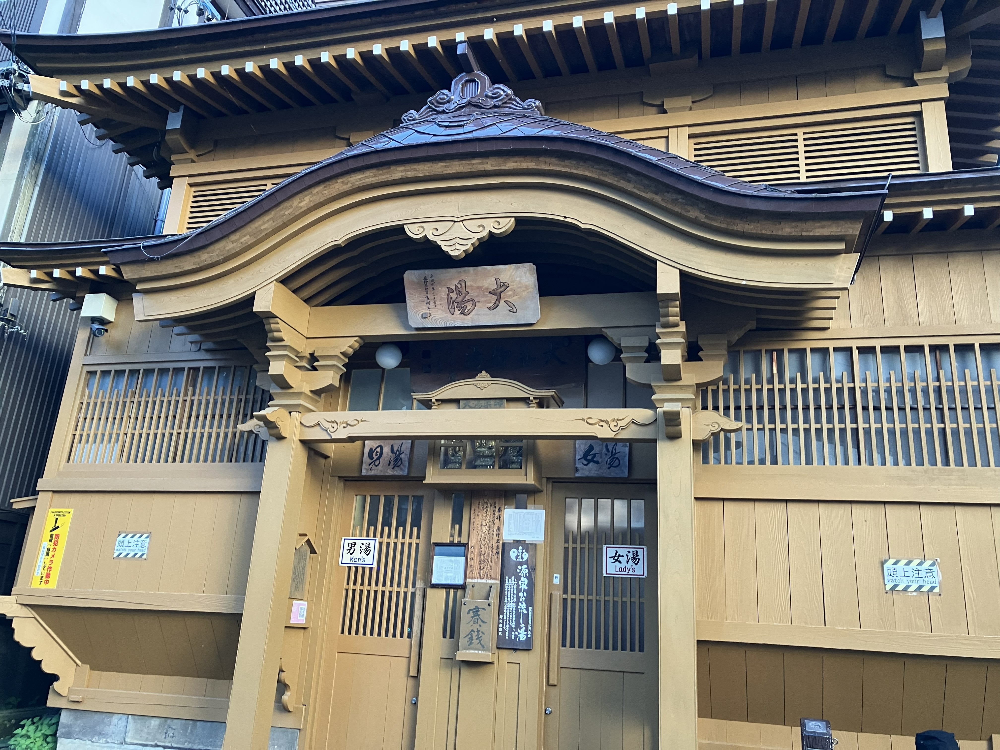
～DAY3🚴～
野沢温泉から飯山駅、そして帰路へ
9月6日(日)
最終日は野沢温泉を出発し、北陸新幹線「飯山駅」までの区間を走ります。
走行距離は約45km、獲得標高は333m、前日に比べて比較的穏やかなダウンヒル基調の道のりです。
途中、高橋まゆみ人形館で小休憩し、飯山駅周辺の温浴施設でサイクリングの汗を流します。
着替えを済ませた後、新幹線にて帰路へ。
大自然を満喫した3日間の行程が完了です。
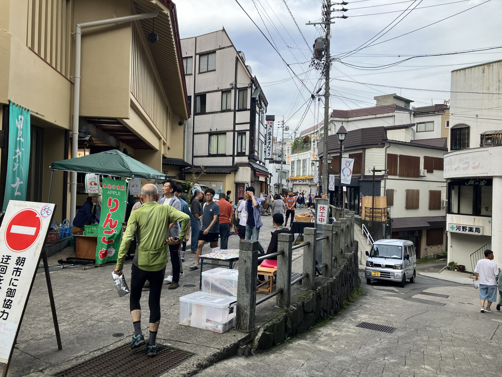
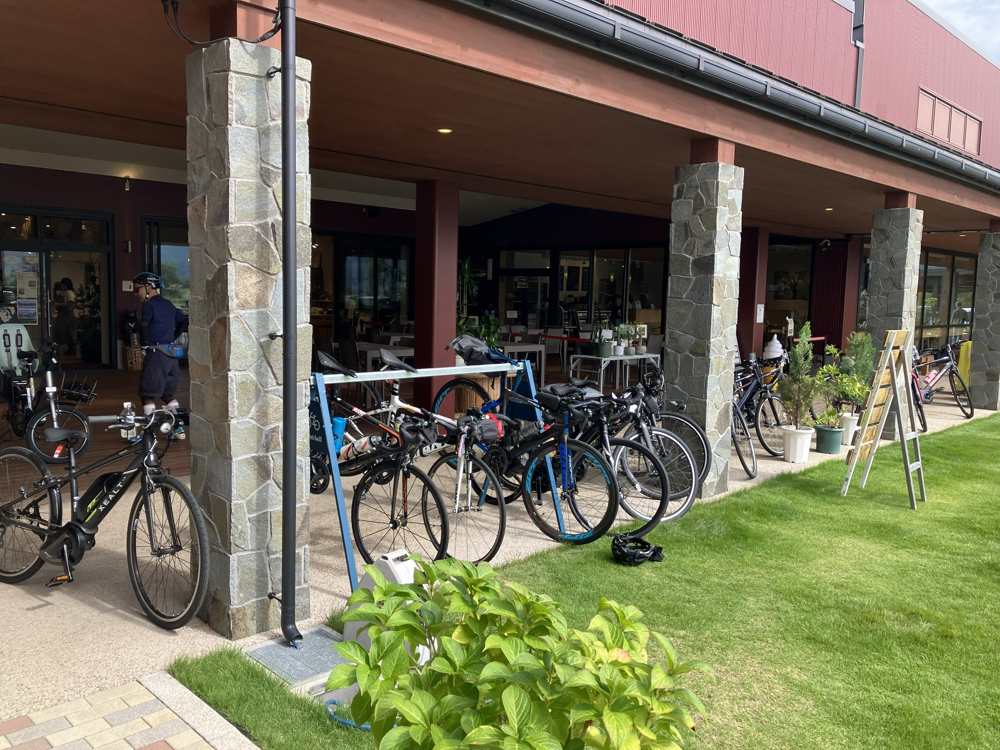
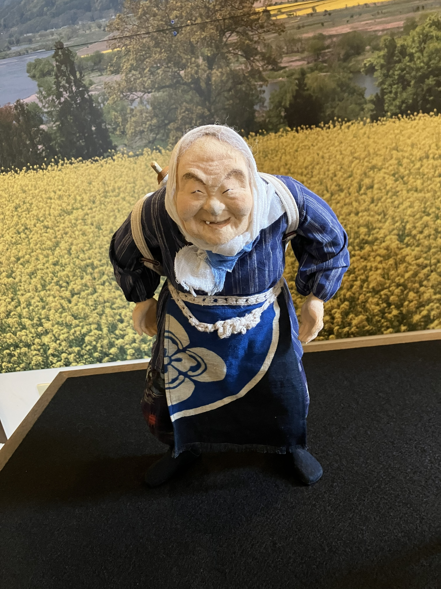
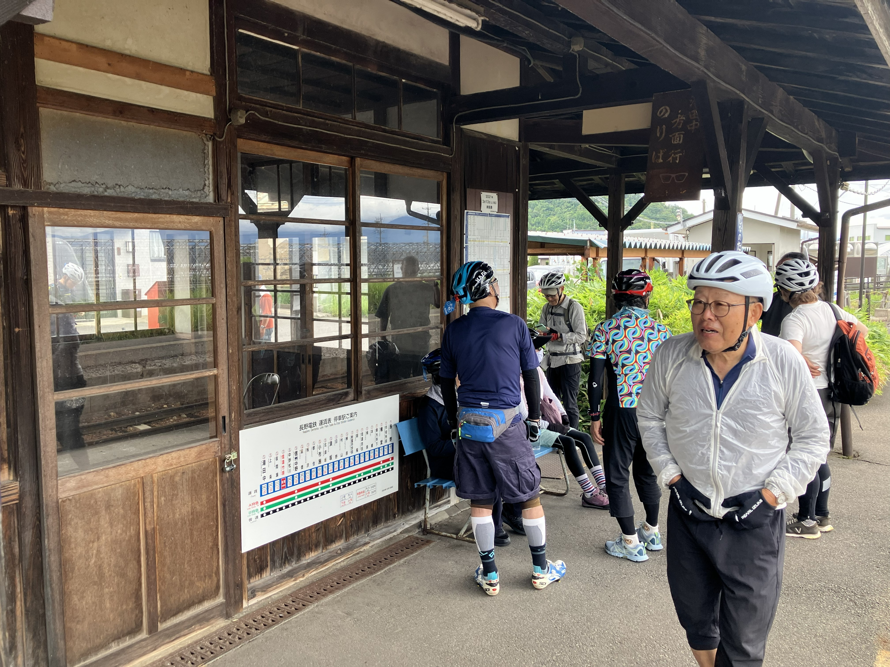